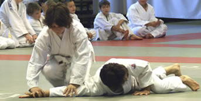

|
AIKIDO GYEREKCSOPORTAZ AIKIDO az ember harmonikus fejlõdésének útja. Külsõ formája õsi japán harcmûvészeti iskolákra vezethetõ vissza, szellemisége pedig mélyen gyökerezik a keleti gondolkodásmódban és kultúrában. A gyerekfoglalkozásokon a tanulók megismerkednek az aikido életkoruknak, testi és szellemi fejlettségüknek megfelelõ alapelemeivel. Az órák felépítése:
"figyelem"
"energia" "hajlékonyság"
"ügyesség - rugalmasság"
"egyensúly" "bátorság" "együttmûködés"
"összhang" rögzítések, leszorítások: "szilárdság"  "higgadtság - türelem - kíméletesség" "önuralom" "csoport" A fenti gyakorlási formák megerõsítik, rugalmassá és rendezetté teszik a gyerekek testét, valamint elõsegítik mozgásuk koordináltabbá és tudatosabbá válását. A gyakorlással a gyerekek türelmet, figyelmet és önfegyelmet tanulhatnak, miközben megismerkednek a társaikkal való kommunikáció egy különleges formájával. A tapasztalatok szerint az aikido gyakorlása hozzásegít a felnõttekre jellemzõ helytelen testi és szellemi berögzõdések (pl. rossz tartás; merev, fölösleges izomfeszültségekkel járó mozdulatok, stressz, stb.) megelõzéséhez vagy a már kialakult rossz szokások megszûntetéséhez. Az aikido tanulmányozásának célja tehát nem elsõsorban az önvédelmi technikák mechanikus elsajátítása, és nem is a versenyekre való felkészülés, hiszen az aikidoban nincsenek versenyek. A gyakorlás valódi célja önmagunk és lehetõségeink megismerése, és ezen keresztül egy természetes és hatékony mozgás- és gondolkodás-kultúra megteremtése. Gollob Szabolcs (dojovezetõ) Az Aikidóról bõvebben itt>>> . Bemutatófilm a gyerekcsoport munkájáról: További rövid videók: <video1> <video2> <video3> <video4> További képek: >>fotógaléria: Évzáró edzés - 2006. december>> >> Képek a 2007 januári, franciaországi Téli Tábor gyerek edzéseirõl >> Felszerelés:
Jelentkezés és csatlakozás folyamatosan 7 éves (iskolás) kortól. Az edzések helye és idõpontja az órarendben.* További információ és jelentkezés:info@rajibudoiskola.huTelefon: 06 70 225 3505* TV interjú: * KÖNYV:
* AIKIDO DVD SOROZAT: *
|


| Tenjinchi Dojo | EBR International | Raji Ukemi Fitness | Aikido | Jodo | Iaido | Gyerekcsoport | Órarend | Tanárok Hírek/Események | Fotók / Videók | Olvasnivaló | Linkek |